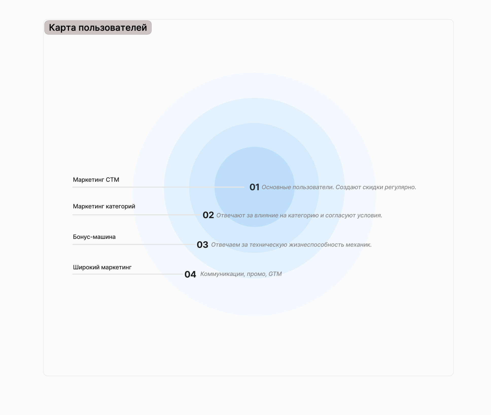
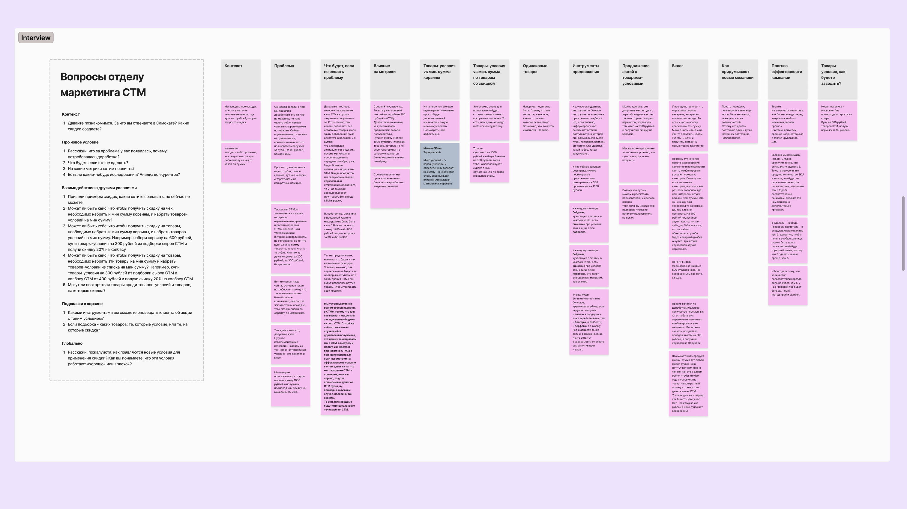
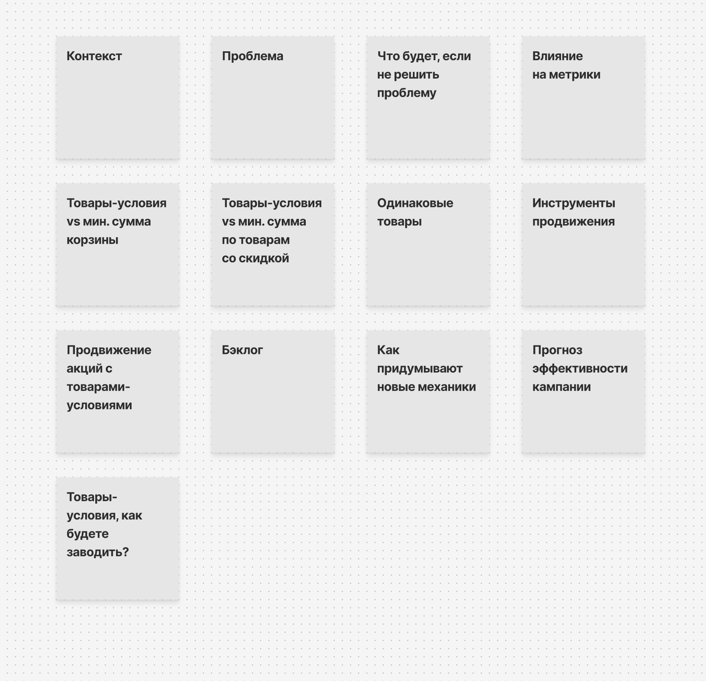
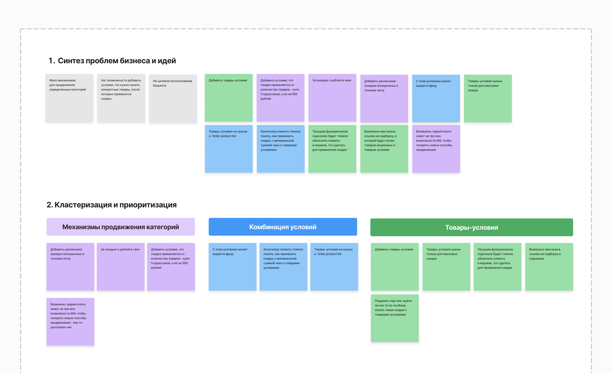
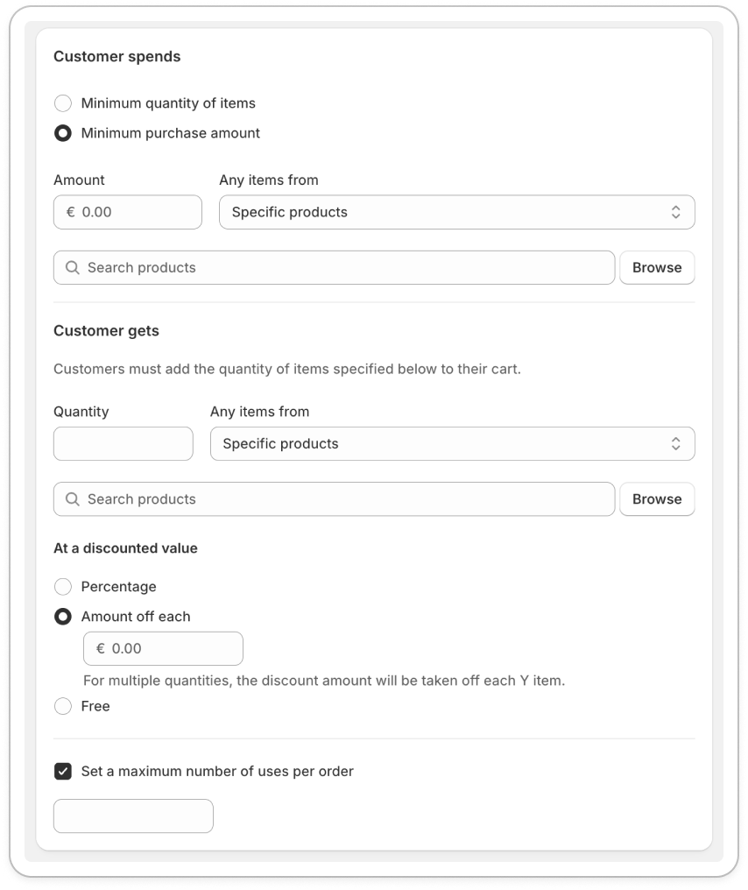

Контекст
В Самокате я работала над двумя продуктами: один для трейд-маркетологов, другой для маркетологов. Речь в кейсе пойдёт про Бонус-машину. Это продукт, в котором маркетологи создавали скидки для клиентов Самоката по всей сети. Сложность работы заключалась в том, что существует 13 отделов маркетинга, у каждого свой процесс создания и жизни скидки, и у каждого процесса свои нюансы и бюрократические процедуры, которые нужно учитывать.
В кейсе расскажу про задачу от отдела маркетинга собственной торговой марки, сокращенно СТМ.
Моя роль: продуктовый дизайнер
Команда: продуктовый менеджер, аналитик
Как работало «до»?
Отдел маркетинга планирует акцию с участием товаров собственной торговой марки. Например, «Купи 3 круассана и получи игрушку за 1 руб».
Такая скидка нужна, чтобы увеличить продажи конкретных круассанов. Причём причины могли быть разные:
- маржинальный товар, хотим больше прибыли;
- есть остатки по разным регионам, региональные менеджеры попросили продвинуть конкретные товары;
- выпустили новый товар СТМ и хотим его продвигать.
Но возможности настроить скидку так, чтобы она работала при покупке конкретных товаров, не было. То есть пользователь просто мог положить в корзину 3 любые товара и получить игрушку.
Условия диктовались только текстом и никак не регулировались программно, поэтому эффективность акции искажалась: деньги закладываются на продвижение СТМ, а прирост выручки уходит в другие категории.
Проблема и цель
Проблема пользователя
Нет возможности таргетировать скидки на конкретные позиции.
Почему важно сейчас
«Похожие механики растят средний чек покупателя, мы это видим по метрикам за последние месяцы, поэтому будем делать их ещё больше».
Гипотеза
Если добавить возможность таргетировать скидки на конкретные товары и категории, маркетологи смогут точнее управлять промо-механиками. Это повысит средний чек по СТМ и общую конверсию участия в акциях за счёт более релевантных и понятных условий для пользователей.
Целевая метрика
- Средний чек по СТМ должен вырасти минимум на +20%.
- Рост доли СТМ в заказах на +10 п.п.
Роль и вклад
Что сделала лично я
- Организовала и провела встречи с менеджером и аналитиком для уточнения постановки задачи.
- Подготовила и провела глубинные интервью с маркетологами, чтобы понять, как они работают сейчас и почему это проблема.
- Выполнила кластеризацию и приоритизацию полученной информации.
- Сделала исследование конкурентов в контексте задачи.
- Предложила несколько вариантов решения.
- Организовала UX-тестирование выбранного решения.
- Презентовала макеты команде, собрала обратную связь у руководителя, редактора и исследователя.
- Подготовила финальные макеты к разработке.
Исследования
4.1 Карта пользователей и стейкхолдеров
Чтобы понять, кто участвует в создании скидок и у кого «болит», я разложила роли вокруг задачи и отметила степень вовлечённости. Это сразу показало, кто работает в системе ежедневно, а кто подключается только на отдельных этапах.

После карты стейкхолдеров я провела глубинные интервью, чтобы подтвердить роли и собрать реальные боли пользователей.


Когда собрала достаточно историй и примеров, свела всё в одну карту и стала выделять повторяющиеся проблемы. Так оформились ключевые кластеры и гипотезы, с которыми пошли дальше.

После синтеза посмотрела, как похожие продукты решают настройки скидок. Один из референсов — Shopify, где мастер чётко разделён на шаги и показывает, как меняется итоговая стоимость.

Что подсмотрела:
- простая вертикальная структура формы;
- чёткое разделение «условия» и «результат»;
- короткие подсказки в сложных местах;
- радиокнопки для выбора типа условия.
Что не стала повторять:
- избыточные настройки, которые у нас не нужны;
- перегруженное ветвление условий.
4.2 Интервью
Провела серию глубинных интервью с маркетологами из разных регионов. Собрала сценарии, как они создают акции, и выяснила, что большинство обходных путей строится на «словах в описании», а не на системных настройках.
4.3 Синтез и кластеризация
Инсайты сгруппировала в кластеры: проблемы прозрачности, отсутствие таргетирования, сложная модерация условий. На их основе сформулировала требования к новой конфигурации скидок.
Референсы и паттерны
Изучила конкурентов и e-commerce площадки с похожими акциями. Выписала паттерны, которые уменьшают ошибки операторов: пошаговые формы, превью условий, явные подсказки о применении скидки.
Идеи и концепции
На основе паттернов собрала несколько концепций оформления скидок: «мини-конструктор», «мастер с проверками» и «быстрый пресет». Каждая идея фокусировалась на том, чтобы маркетолог мог настроить точные условия без сложных инструкций.
Процесс и артефакты
7.1 Список скидок
Обновила список скидок: добавила фильтры по типам СТМ, отметки статуса и быстрые действия. Это ускорило поиск актуальных механик.
7.2 Базовые настройки
Настройки вынесены в первую секцию мастера: название, ответственная команда, бюджет. Все поля снабжены проверками и подсказками по формату.
7.3 Тип и размер скидки
Пользователь выбирает тип скидки (фиксированная сумма, процент, подарок) и сразу видит калькулятор с подсказками по маржинальности.
7.4 На какие товары
Добавлены выборки SKU по категориям, ручной поиск и сохранённые подборки. Можно таргетировать конкретный набор, а не все товары подряд.
7.5 Условия применения
Тут задаются пороги (количество товаров, сумма чека), ограничения по регионам и сегментам клиентов. Условия проверяются системой сразу.
7.6 Период действия
Календарь с подсветкой пересечений и автоматическими напоминаниями, если выбранный период конфликтует с другими кампаниями.
7.7 Отправка на подтверждение
Финальный шаг — превью всей акции, чек-лист и выбор получателей для согласования. После отправки менеджер видит статус и может править заявку.
UX-тестирование
Провела неформальные UX-сессии с пятью маркетологами. Смотрела, где они зависают в мастере настроек, и фиксировала паттерны ошибок. После тестов упростила формулировки и добавила системные подсказки.
Итерации
Несколько раундов итераций прошли вместе с разработкой и редактором. Убрали лишние поля из базовых настроек, пересобрали карточку скидки и доработали сценарий согласования.
Запуск, метрики и результат
После запуска следила за метриками: скоростью создания акции, долей СТМ в выбранных товарах, ростом маржи. Первые данные подтвердили, что таргетированные скидки быстрее проходят модерацию и точнее влияют на нужные категории.
Выводы
Детализация процесса создания скидок и ввод таргетирования помогли выровнять ожидания СТМ и команд на местах. Проект показал, что даже сложные механики можно сделать понятными, если разложить путь на шаги и валидировать каждую гипотезу с пользователями.